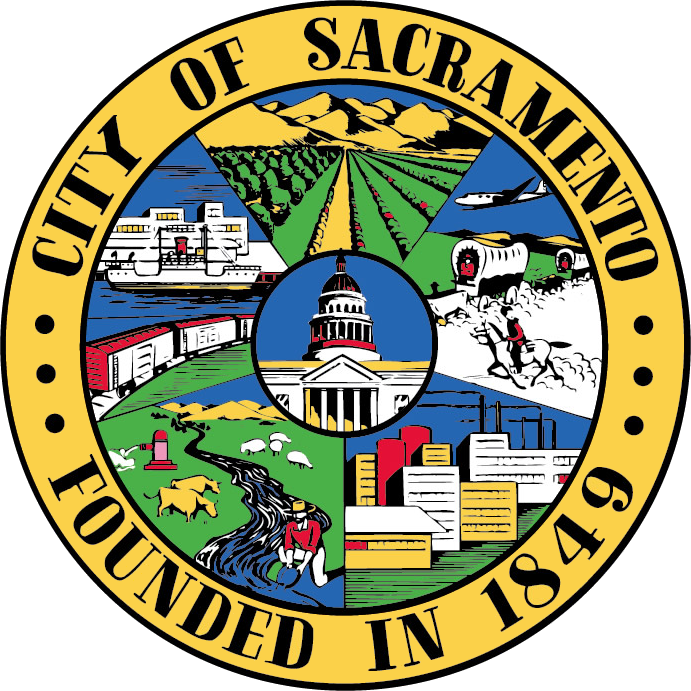

City Snapshot
Sacramento, the capital city of California, is renowned for its rich history and cultural diversity. Established during the California Gold Rush, it quickly became a pivotal economic and political hub in the region. The city's geography, nestled in the Sacramento Valley, has made it a fertile ground for agriculture and innovation. Its tree-lined streets and vibrant community events reflect a blend of tradition and modernity. Throughout its development, Sacramento has faced challenges such as housing shortages and environmental concerns, yet it continues to grow with resilience and a commitment to sustainability. Today, Sacramento stands as a symbol of California's heritage and progress, balancing its historical roots with a forward-looking vision for its residents and visitors alike.